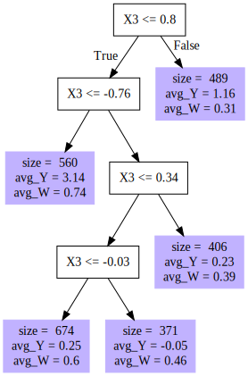
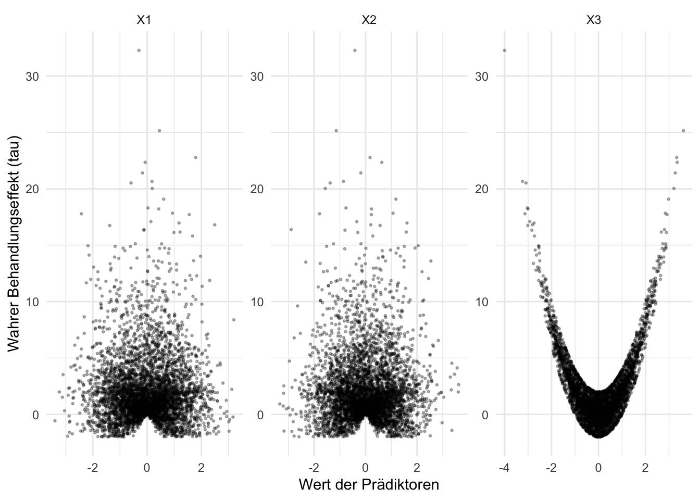
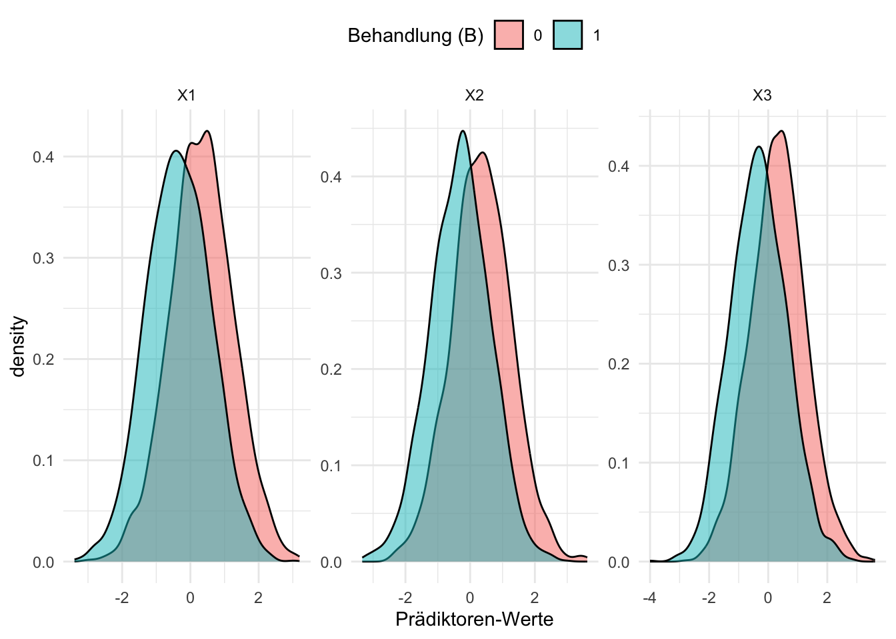
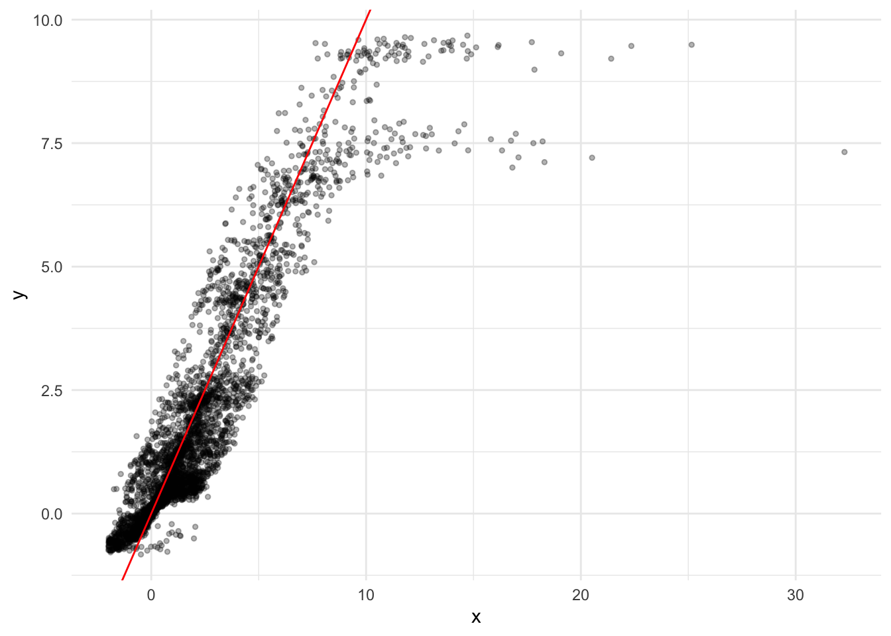

15 Baum-basierte Methoden
Baum-basierte Methoden bieten eine vielseitige und leistungsstarke Herangehensweise für Vorhersage und Klassifikation in komplexen Datensätzen mit nicht-linearen Zusammenhängen. Ein Vorteil baum-basierter Methoden ist ihre inhärente Fähigkeit, die Bedeutung einzelner Variablen für die Vorhersage zu quantifizieren – eine Eigenschaft, die viele Machine-Learning-Modelle nicht ohne weiteres bieten und insbesondere in hoch-dimensionalen Anwendungen (mit vielen potentiellen Regressoren) nicht trivial ist. Dies ermöglicht es, tiefere Einblicke in den Einfluss einzelner Merkmale auf die Vorhersagen des Modells zu erhalten, was besonders in empirischen Anwendungen für die Entscheidungsstützung mit Machine Learning hilfreich sein kann.
Entscheidungsbäume stellen die Grundlage dieser Methoden dar. Sie ermöglichen die Aufteilung der Daten in immer kleinere, homogenere Gruppen, basierend auf binären Entscheidungsregeln, die aus den Prädiktoren abgleitet werden. Die trainierten Regeln eines solchen Modells lassen sich anhand eines Binärbaums visualisieren, was eine intuitive Interpretierbarkeit der Ergebnisse erlaubt.
Random Forests ist ein Ensemble-Ansatz, bei dem viele Entscheidungsbäume kombiniert werden. Jeder Baum wird auf einer zufälligen Teilmenge der Daten trainiert (Bagging), und bei jedem Knoten wird zusätzlich eine zufällige Teilmenge der Merkmale berücksichtigt. Die finale Vorhersage des Random Forests basiert auf der Aggregation der Vorhersagen aller Bäume (Mehrheitsvotum für Klassifikation, Durchschnitt für Regression). Dieses Verfahren reduziert das Risiko einer Überanpassung und erhöht oft die Vorhersagegenauigkeit im Vergleich zu einzelnen Entscheidungsbäumen.
Boosting ist eine weitere Ensemble-Methode zur Anpassung von Modellen mit hoher Vorhersagegüte durch Kombination einfacher Modelle (Base learner), wobei Regressions- oder Klassifikationsbäume eingesetzt werden können. Alternativ zu Random Forests trainieren Boosting-Algorithmen sukzessiv einfache (Klassifikations- oder Regressions-)Bäume, wobei jeder nachfolgende Baum das Ziel hat, die Vorhersagefehler der vorherigen Bäume zu korrigieren.
In diesem Kapitel erläutern wir die Anwendung baum-basierter Methoden in R anhand von Beispieldatensätzen. Wir zeigen, wie Regressionsbäume, Random Forests und Boosting-Modelle im parsnip-Framework trainiert werden und wie die Vorhersageleistung durch die Wahl geeigneter Hyperparameter mit Cross-Validation und Out-of-Sample-Evaluierungsmethoden optimiert werden kann.
15.1 Entscheidungsbäume
Ein Entscheidungsbaum ist ein Modell, das auf der Basis von hierarchischen Bedingungen bzgl. der Regressoren Vorhersagen für die Outcome-Variable trifft. Jeder Baum beginnt mit einem Wurzelknoten (root node) und verzweigt sich binär. Jede Verzweigung (split) stellt eine Bedingung dar, die auf einem bestimmten Regressor basiert. Der Baum trifft Entscheidungen, indem er diese Bedingungen sukzessive überprüft, bis er zu einem Blattknoten (leaf node / terminal node) gelangt, der die finale Vorhersage liefert. Hierbei handelt es sich eine Mehrheitsentscheidung für Klassifikation und einen Mittelwert, jeweils gebildet anhand Beobachten des Trainingsdatensatzes im leaf node.
Abbildung 15.1 zeigt ein einfaches Beispiel eines Entscheidungsbaums zur Klassifikation der Kreditwürdigkeit einer Person. Die Klassfikation erfolgt, in dem die Beobachtung basierend auf den Merkmalen Alter, Einkommen und Eigentum durch den Baum geleitet wird. Zunächst wird geprüft, die Person 30 Jahre oder jünger ist. Fall ja, entscheidet der Baum anhand des Einkommens: Bei einem Jahreseinkommen von 40.000 oder weniger wird die Person als wenig kreditwürdig klassifiziert, bei höherem Einkommen als mäßig kreditwürdig. Für Personen älter als 30 Jahre überprüft das Modell lediglich, ob die Person eine Immobilie besitzt, um zwischen mäßiger Kreditwürdigkeit und guter Bonität zu unterscheiden.
15.2 Training von Bäumen
Zur Konstruktion von Binär-Bäumen werden etablierte Algorithmen wie Classification and Regression Trees (CART von Breiman u. a. (1984) verwendet. Die wesentliche Vorgehensweise für das Training eines Baums \(T\) ist wie folgt:
CART-Algorithmus
-
Splitting: Beginnend am root node sucht der Algorithmus nach der “besten” Regel, die Daten anhand eines Merkmals in zwei Gruppen zu teilen. Die Qualität des Splits wird in Abhängigkeit der Definition der Outcome-Variable beurteilt:
Bei Klassifikation: Die Reinheit (purtity) der Klassen in den unmittelbar nachfolgen nodes wird maximiert. Ein gängiges Kriterium hierfür ist der Gini-Koeffizient.1
Bei Regression: Der MSE bei Vorhersage des Outcomes durch Mittelwertbildung für Beobachtungen in den unmittelbar nachfolgenden nodes wird minimiert.
-
Rekursion: Der Prozess wird rekursiv fortgesetzt, bis Abbruchkriterien greifen eine weitere Verzewigung verhindern:
- Die maximale Baumtiefe (tree depth) ist erreicht
- Die leaf nodes sind hinreichend “rein”: Alle Beobachtungen in einem leaf node gehören zur gleichen Klasse oder die Verbesserung des Loss durch weitere Splits fällt unter einen festgelegten Schwellenwert
- Weitere Splits führen zu leaf nodes, die eine Mindestanzahl an Beobachtungen (minimum split) unterschreiten würden
-
Pruning: Um Überanpassung an die Trainingsdaten zu vermeiden, kann der Baum beschnitten werden (pruning). Der Grundgedanke ist, dass tief verzweigte Bäume die Trainingsdaten zwar gut modellieren können, aber schlecht auf neue, unbekannte Daten generalisieren.
Bei cost complexity (CP) pruning werden, beginnend auf Ebene der leaf nodes sukuzessive Äste entfernt, und eine Balance zwischen Komplexität des Baums und dem Anpassungsfehler zu finden. Ähnlich wie bei regularisierter KQ-Schätzung (Kapitel 13), wird die Verlustfunktion \(L\) um einen Strafterm für die Komplexität erweitert. Der Effekt der Strafe wird durch den CP-Parameter \(\alpha\in[0,1]\) geregelt,
\[\begin{align*} L_{\alpha}(T) = L(T) + \alpha \lvert T\rvert, \end{align*}\]
für einen Baum \(T\) mit Komplexitätsmaß \(\lvert T\rvert\) (Anzahl der leaf nodes) (Hastie, Tibshirani, und Friedman 2013).
1 Der Gini-Koeffizient \(0\leq G\leq1\) misst die Homogenität der Outcome-Variable für die Beobachtungen eines Knotens. \(G=0\) ergibt sich bei vollständiger “Reinheit” (alle Beobachtungen im Knoten gehören zur gleichen Klasse). \(G > 0\) zeigt Heterogenität der Klassen an, die mit \(G\) zunimmt
Zur Demonstation der Schätzung von Regressionsbäumen mit R betrachten wir nachfolgend den Datensatz MASS::Bosten. Ziel hierbei ist es, mittlere Hauswerte medv in Stadteilen von Boston, MA vorherzusagen. Wir verwenden hierzu Funktionen aus dem Paket parsnip.
Zunächst transformieren wir den Datensatz in ein tibble-Objekt und definieren Trainings- und Test-Daten.
parsnip bietet eine vereinheitlichetes Framework für das Training von Modellen mit R und eine flexible API für Machine Learning. Wir definieren zunächst mit parsnip::decision_tree() eine Spezifikation zum Training von Entschieundgsmodellen und übergeben beispielhaft einen CP-Parameter \(\alpha=.1\). Mit parsnip::set_engine wählen wir das Paket raprt. Der hier implementierte Agorithmus ist CART. Zuletzt legen wir mit parsnip::set_mode() fest, dass der Algorithmus für Regression durchgeführt werden soll.
Der Output in tree_fit$fit zeigt, dass CP-Pruning zu einem kleinen Baum mit 3 Hierarchie-Ebenen geführt hat. Die Struktur zeigt, dass lstat und rm für Splitting-Regeln (split) verwendet werden, wie viele Beobachtungen den nodes zugeordnet sind (n), den Wert der Verlustfunktion (deviance) sowie den Durchschnitt von medv für jede node (yval). Für die drei leaf nodes (gekennzeichnet mit *) ist yval die Vorhersage der Outcome-Varibale für entsprechend gruppierte Beobachtungen.
Eine leichter interpretierbare Darstellung der Entscheidungsregeln des angepassten Baums in tree_fit$fit erhalten wir mit rattle::fancyRpartPlot().
Abbildung 15.2 zeigt Beobachtungen von rm und lstat, die hinsichtlich ihrer in drei Klassen eingeteilten Ausprägung von medv eingefärbt sind. Die durch den CART-Algorithmus gelernten Entscheidungsregeln sind als farbige Paritionen des Regressorraums dargestellt.

lstat und rm durch Regressionsbaum
Für eine datengetriebene Wahl des CP-Parameters \(\alpha\) kann Cross Validation (CV) verwendet werden. Hierzu erstellen wir zunächst eine parsnip-Spezifikation mit cost_complexity = tune::tune() in decision_tree() und erstellen einen workflow mit parsnip::workflow()
Mit rsample::vfold_cv() definieren wir den CV-Prozess: 10-fold CV mit 2 Wiederholungen. tune::tune_grid() führt CV anhand des in tree_wf_cv definierten workflows durch. Hierbei werden in cp_grid festgelegte Werte von cost_complexity berücksichtigt. Die mit yardstick::metric_set(rmse) festgelegte Verlustfunktion ist der mittlere quadratische Fehler (RMSE).2
2 Die hier verwedete Funktion ist yardstick::rmse().
Mit workflowsets::autoplot() kann der CV-RMSE für als Funktion des CP-Parameter leicht grafisch betrachtet dargestellt werden.
Für eine tabellierte Übersicht der besten Modelle kann tune::show_best() verwendet werden. tune::select_best() liest die beste Parameter-Kombination aus.
Anhand tree_fit_cv trainieren wir die finale Spezifikation.
Der geringe CP-Parameter führt zu einem großen Entscheidungsbaum.3
3 Die Dimension der Grafik wurde hier zwecks Darstellung des gesamten Baums gewählt. print(final_tree_fit$fit) druckt die Entscheidungsregeln in die R-Konsole (hierzu die letzte Zeile ausführen).
Zur Beurteilung der Relevanz von Variablen für die Reduktion des Anpassungsfehlers (variable importance) kann der Eintrag variable.importance des rpart-Objekts herangezogen werden. Variable importance misst hier die Gesamtreduktion der Fehlerquadratsumem über alle Knoten, an denen die jeweilige Variable für Splits verwendet wird.
Die Werte von Variable Importance zeigen, dass der mit CV ermittelte Baum alle Regressoren in boston_train für Splits nutzt, wobei lstat und rm die relevantesten Variablen sind.
Anhand von Vorhersagen für medv mit dem Test-Datensatz boston_test können wir das naive Baum-Modell tree_fit mit dem durch CV ermittelten Modell tree_fit_cv hinsichtlich des Vorhersagefehlers für ungesehene Beobachtungen vergleich. yardstick::metric() berechnet hierzu automatisch gängige Statistiken für Regressionsprobleme.
Der Vergleich zeigt eine bessere Vorsageleistung des großen Baums in tree_fit_cv. In diesem Fall scheint CP-Pruning wenig hilfreich zu sein. Tatsächlich liefert ein Baum mit \(\alpha=0\) bessere Vorhersagen als tree_fit_cv (überprüfe dies!).
15.3 Bagging
Bagging ist eine Ensemble-Modelle, die durch aus einer Kombination von vielen Entscheidungsbäumen bestehen. Bagging steht für Bootstrap Aggregating und nutzt einen Algorithmus, bei dem Bäume auf zufälligen Stichproben aus dem Trainingsdatensatz angepasst werden: Jeder Baum wird auf einer Bootstrap-Stichprobe (siehe Kapitel 5) trainiert, die durch zufällige Züge (mit Zurücklegen) erstellt wird. Nach dem Training aggregiert Bagging die Vorhersagen aller Bäume des Ensembles.
Der Vorteil von Bagging gegenüber einem einzelnen Entscheidungsbaum ist, dass die Varianz der Vorhersage deutlich reduziert werden kann: Einzelne Entscheidungsbäume neigen dazu, Muster in den Trainingsdaten zu lernen, die sich zufällig aus der Zusammensetzung der Stichprobe ergeben und nicht repräsentativ für Zusammenhänge zwischen den Regressoren und der Outcome-Variable sind. Diese Überanpassung führt zu hoher Varianz auf von Vorhersagen für ungesehene Daten. Durch das Training vieler Bäume auf unterschiedlichen zufälligen Stichproben aus den Trainingsdaten und das anschließende Aggregieren kann der negative Effekt der Überanpassung auf die Unsicherheit der Vorhersage einzelner Bäume reduziert werden.
Eine Bagging-Spezifikation kann mit parsnip::bag_tree() festgelegt werden. Mit times = 500 wird definiert, dass der Bagging-Algorithmus ein Ensemble mit 500 Bäumen (mit CART) anpassen soll. Das Training und die Vorhersage auf den Testdaten erfolgt analog zur Vorgehensweise in Kapitel 15.1.
Die Auswertung auf den Testdatensatz ergibt eine deutliche Verbesserung der Vorhersageleistung gegenüber einem einfachen Regressionsbaum.
Obwohl die Bäume beim Bagging auf unterschiedlichen Stichproben trainiert werden, kann innerhalb des Ensembles dennoch eine deutliche Korrelation vorliegen: Da jeder Baum auf alle Regressoren für Splits zugreift, können trotz Bootstrapping ähnliche (unverteilhafte) Muster aus dem Datensatz erlernt werden, was sich nachteilig auf die Generalisierungsfähigkeit auswirken kann. Diese Korrelation mindert die Effektivität von Bagging, da stark korrelierte Bäume dazu neigen, ähnliche Fehler zu machen.
15.4 Random Forests
Random Forests erweitern Bagging, indem zusätzlich bei jedem Knoten innerhalb jedes Baumes eine zufällige Teilmenge der Regressoren als potentielle Variable für die Split-Regel ausgewählt wird. Dies führt zu einer Reduktion der Korrelation zwischen den Bäumen, was die Genauigkeit verbessert und das Risiko von Overfitting weiter verringert.
In R erstellen wir die Spezifikation mit parsnip::rand_forest(). Der Parameter mtry legt fest, wie viele Regressoren \(m\) zufällig für jeden Split zur Verfügung stehen. Wir nutzen den im randomForest-Paket implementierten Algorithmus und legen in set_engine() fest, dass die von randomForest::randomForest() berechnete Fehler-Metrik im Output-Objekt ausgegeben wird (tree.err = TRUE). Um die Spezifikation für verschiedene Werte von mtry anwenden zu können, implementieren wir die Spezifikation innerhalb einer Wrapper-Funktion rf_spec_mtry(). Mit purrr::map() iterieren wir rf_spec_mtry() über drei verschiedene Werte für den Tuning-Parameter mtry (4, 6 und 10 Variablen).4
4 Eine Faustregel für die Wahl von \(m\) bei \(k\) verfügbaren Regressoren ist \(m\approx\sqrt{k}\).
Für eine Beurteilung des Vorhersageleistung dieser drei Modelle können wir den Out-of-Bag-Fehler (OOB) verwenden:
Der OOB-Fehler ist eine Schätzung des Generalisierungsfehlers ohne einen separaten Testdatensatzes. Bei Random Forests (und Bagging) ist dies aufgrund der Berechnung des Ensembles für Bootstrap-Stichproben möglich: Grob ein Drittel der Beobachtungen des Datensatzes sind nicht Teil der Stichprobe, die für das Training jedes Baums im Ensemble genereiert werden.5 Diese nicht gezogenen Datenpunkte sind OOB-Beobachtungen. Der OOB-Fehler des Ensembles ist der durchschnittliche Fehler für die aggregierten Vorhersagen der Bäume des Forests.
5 Beachte, dass beim Bootstrap \(n\) aus \(n\) Beobachtungen mit Zurücklegen gezogen werden. Die Wahrscheinlicht, dass eine Beobachtung nicht gezogen wird (“Out-of-Bag”), ist \((1-1/n)^n\approx37\%\).
Der OOB-Fehler kann auch verwendet werden, um die erforderliche Größe des Random Forests zu beurteilen: Eine größere Anzahl von Bäumen reduziert tendenziell die Varianz der Vorhersagen und verbessert die Generalisierungsfähigkeit. Allerdings nimmt dieser Effekt ab, und ab einer bestimmten Baumanzahl sind weitere Verbesserungen marginal. Obwohl das Risiko von Überanpassung durch viele Bäume aufgrund des Bagging minimal ist, kann es bei großen Datensätzen sinnvoll sein, kleinere Wälder zu trainieren, um den Rechenaufwand zu verringern. Wir plotten hierfür den OOB-Fehler für das Modell mit mtry = 10 gegen die Anzahl der Bäume.
Die Grafik zeigt, dass die Verbesserung des OOB-Fehlers jenseits von 250 Beobachtungen deutlich nachlässt, sodass ein Training von 500 Bäumen ausreichend scheint.
Zur Beurteiliung der Vorhersagegüte mit dem Testdatensatz gehen wir analog zum Training vor und iterieren mit map() über rf_fits, die Liste der angepassten Modelle.
Ähnlich wie für einen einzelnen Baum kann die Relevanz von Variablen anhand der Reduktion der Loss-Funktion durch das Ensemble beurteilt werden. Für einen einfachen Vergleich der Variable Importance für den Random Forests mit mtry = 10 in rf_fits$rf_mtry10_fit nutzen wir ggRandomForests::gg_vimp().
Die Grafik bestärkt unsere Schlussfolgerung aus der Analyse des (mit CART trainierten) einzelnen Entscheidungsbaums in Kapitel 15.1, dass rm und lstat die wichtigsten Regressoren für die Vorhersage von medv sind.
15.5 Boosting
Boosting ist eine leistungsstarke Ensemble-Methode für Vorhersagen, die kleine Modelle (oft Entscheidungsbäume geringer Tiefe) sukzessiv trainiert und zu einem starken Modell kombiniert. Anders als bei Random Forests, bei denen viele Bäume unabhängig voneinander auf zufälligen Stichproben der Daten trainiert werden, geht ein Boosting-Algorithmuss sequentiell vor: Jeder nachfolgende Baum wird darauf optimiert, die Fehler des vorherigen Modells zu reduzieren. Die Idee hierbei ist es, iterativ “schwache” Modelle zu erzeugen, die eine gute Anpassung für Datenpunkte liefern, die in den vorherigen Durchläufen schlecht vorhergesagt wurden.
Für einen Trainingsdatensatz \(\{(x_i, y_i)\}_{i=1}^n\), wobei \(x_i\) die Input-Features und \(y_i\) Beobachtungen des Outcomes sind, kann Boosting wiefolgt durchgeführt werden.
Boosting für Regression
Initialisierung: Initialisiere das Boosting-Modell als \(\widehat{F}_0(x)\). Setze die Residuen \(r^0_i=y_i\) für alle \(i\)
-
Iteration: Wiederhole die folgenden Schritte für \(b = 1,2,\dots,B\) mit \(B\) hinreichend groß:
2.1 Base Learner: Trainiere Baum \(T_b\) mit \(\{(\boldsymbol{x}_i, r^{b-1}_i)\}_{i=1}^n\) für die Vorhersage des Fehlers der vorherigen Iteration \(r^{b-1}\).
2.2 Aktualisierung: Aktualisiere das Boosting-Modell,
\[\begin{align*} \widehat{F}_{b}(\boldsymbol{x}) = \widehat{F}_{b-1}(\boldsymbol{x}) + \eta \cdot T_{b}(\boldsymbol{x}), \end{align*}\]
wobei \(\eta\) die (oft klein gewählte) Lernrate ist.
2.3 Fehlerberechnung: Berechne die Residuen \(r^b_i\) als Differenzen zwischen dem tatsächlichen Werten \(y_i\) und den Vorhersage des aktuellen Modells \(\widehat{F}_m(\boldsymbol{x}_i)\),
\[\begin{align*} r^b_i = y_i - \widehat{F}_b(\boldsymbol{x}_i). \end{align*}\]
-
Output: Gib das finale Modell aus:
\[\begin{align*} \widehat{F}(\boldsymbol{x}) := \sum_{b=1}^B \eta\cdot \widehat{F}^b(\boldsymbol{x}) \end{align*}\]
Der Parameter \(0\leq\eta\leq0\) steuert, wie stark der Einfluss jedes neuen Baumes auf das Modell ist. Eine kleine Lernrate führt dazu, dass viele Bäume benötigt werden, was Vorhersagen (ähnlich wie bei Bagging) stabiler macht. Beachte die sequentielle Natur des Trainings: Die \(r^b_i\) in Schritt 2.3 sind die zu vorhersagenden Outcome-Variable für den nächsten Baum. \(T_{b+1}\) wird trainiert wird, um den Fehler des bisherigen Modells \(\widehat{F}_b\) zu erklären.
Für die Anwendung auf MASS::Boston in R nutzen wir den im Paket gbm implementierten Gradient-Boosting-Algorithmus. Bei Gradient Boosting wird jeder Baum so trainiert, dass er den negativen Gradienten einer Verlustfunktion approximiert, also die Richtung des größten Fehlers. Das Modell wird schrittweise verbessert, indem es entlang des Gradienten aktualisiert wird, um die Vorhersagegüe zu optimieren; siehe Hastie, Tibshirani, und Friedman (2013) für eine detaillierte Erläuterung.
Mit dem nachfolgenden Code-Chunk trainieren wir ein Boosting-Modell für Regression mit 5000 einfachen Bäumen (n.trees = 5000) mit einer maximalen Tiefe von 2 (interaction.depth = 2), d.h. es folgen maximal 2 Entscheidungs-Regeln nacheinander. Um das Risiko von Overfitting gering zu halten, erlauben wir nur Splits, die zu mindestens zwei Beobachtungen in resultierenden nodes führen (n.minobsinnode = 2). Die Lernrate (Beitrag der Base Learner zum Ensemble) wird typischerweise klein (und in Abhängigkeit von n.trees) gewählt (shrinkage = 0.001).6
6 Je kleiner die Lernrate, desto größer sollte n.trees gewählt werden.
Für die Vorhersagen auf dem Test-Datensatz legen wir mit n.trees = gbm_model$n.trees fest, dass das gesamte Ensemble genutzt werden soll.
Die Ergebnisse zeigen, dass Gradient Boosting bereits für die naive Parameterwahl im Aufruf von gbm::gbm() zu einer Verbesserung der Vorhersageleistung gegenüber den Random-Forest-Modellen führt.
Anstatt n.trees = 5000 können wir n.trees in predict() einen Vektor mit verschiedenen Ensemble-Größen übergeben. Für n.trees = 5000 erhalten wir Vorhersagen für jeden Status, den das Boosting-Modell im Training nach seiner Initialisierung bis zu der in gbm::gbm() festgelgten Größe durchläuft. Anhand dieser Vorhersagen können wir die Generalisierungsfähigkeit des Modells in Abhängigkeit der gewählten Lernrate und der Größe beurteilen, in dem wir den RMSE für den gesamten Trainingsprozess berechnen. Für eine leichtere Interpretation erzeugen wir eine Grafik ählich wie bei der OOB-Analyse des Random-Forest-Modells.
Die Grafik zeigt eine schnelle Verbesserung des Out-of-sample-Fehlers mit der Größe des Ensembles. Für die gewählte Lernrate scheinen 5000 Bäume adäquat zu sein.
Analog zu Bagging und Random Forests können wir die Relevanz der Regressoren in Boston für die Vorhersage von medv anhand der mit summary() berechneten (relativen) Variable Importance für die Anpassung auf den Trainingsdatensatz einschätzen.
Obwohl erneut lstat und rm als die wichtigsten Prädiktoren gelistet sind, identifiziert Gradient Boosting im Gegensatz zu Bagging und Random Forests lstat als die Variable mit der größten Vorhersagekraft für medv.
15.6 Causal Trees und Causal Forests7
Baum-Algorithmen sind vielversprechende Ansätze zur Schätzung kausaler Effekte, insbesondere in Situationen, in denen die Bestimmung heterogener Effekte gewünscht ist: Der Vorteil von Baum-Methoden liegt darin, dass sie nicht-parametrisch sind: Der Regressorraum wird adaptiv in Partitionen unterteilt, um auf Basis dieser Aufteilung differenzierte Vorhersagen für die Zielvariable zu treffen. Diese Eigenschaft kann für Kausalanalysen hilfreich sein, da wir in vielen empirischen Anwendungen die Effekte einer Behandlung nicht nur im Durchschnitt für die betrachtete Population, sondern differenzierter schätzen möchten: Ein durchschnittlicher Behandlungseffekt (engl. average treatment effect, ATE) kann nicht ausreichend informativ für unsere Forschungsfrage sein, bspw. wenn wir erwarten, dass eine politische Intervention unterschiedliche Auswirkungen auf verschiedene Bevölkerungsgruppen hat. Idealerweise möchten wir \(\tau_i\) bestimmen, den individuellen Behandlungseffekt einer Beobachtung \(i\). Das fundamentale Problem der Kausalinferenz ist, dass \(\tau_i\) nicht ermittelt werden kann (s. u.), sodass wir unser Ziel abschwächen müssen. Statt \(\tau_i\) suchen wir einen Behandlungseffekt in Abhängigkeit von beobachtbaren Charakteristiken \(\boldsymbol{X}\) für Untergruppen der Population, einen conditional average treatment effect (CATE). Im Potential-Outcomes-Framework ist der CATE definiert als
\[\begin{align*} \tau(\boldsymbol{x}) = \textup{E}\big(Y^{(1)} - Y^{(0)}\big\vert \boldsymbol{X} = \boldsymbol{x}\big), \end{align*}\]
wobei \(Y^{(1)}\) und \(Y^{(0)}\) die potenziellen Outcomes darstellen, wenn eine Behandlung erfolgt bzw. nicht erfolgt. In der Praxis beobachten wir jedoch nur \(Y_i = Y_i^{(B_i)}\), wobei \(B_i\) der Behandlungsindikator für die Beobachtung \(i\) ist, sodass \(\tau(\boldsymbol{x}_i)\) nicht direkt beobachtet werden kann. Unter der Annahme, dass nach Kontrolle für (beobachtbare) \(\boldsymbol{X}\) die Zuordnung zur Behandlung quasi-zufällig ist (unconfoundedness), formal
\[\begin{align*} Y_i^{(0)},\,Y_i^{(1)} \perp B_i \vert \boldsymbol{X}_i, \end{align*}\]
kann \(\tau(\boldsymbol{x})\) geschätzt werden: Wir können Outcome-Differenzen zwischen behandelten und nicht behandelten Beobachtungen als kausal interpretieren, da unbeobachtete Faktoren die Ergebnisse nicht verzerren.
CART und andere traditionelle Entscheidungsbaum-Algorithmen sind für die Schätzung heterogener Behandlungseffekte jedoch ungeeignet. Dafür gibt es zwei wesentliche Ursachen:
-
Das Splitting-Kriterium
Das Splitting-Kriterium des CART-Algorithmus optimiert die Aufteilungen der Beobachtungen in jedem Knoten, um die Genauigkeit von Vorhersagen für die Outcome-Variable \(Y\) durch Minimierung der Heterogienität (Klassifikation) oder des MSE (Regression) zu optimieren. Diese Kriterien zielen also darauf ab, die Homogenität innerhalb der Blätter hinsichtlich \(Y\) zu maximieren.
Für die Schätzung heterogener kausaler Effekte ist ein solches Splitting jedoch nicht zielführend. Statt Knoten zu formen, in denen \(Y\) möglichst homogen ist, benötigen wir für die Schätzung von Behandlungseffekten grundsätzlich Aufteilungen, bei denen sich \(Y\) zwischen den behandelten und unbehandelten Individuen innerhalb der Knoten unterscheidet.8 Das Splitting sollte zu Blättern führen, die hinsichtlich des geschätzten Behandlungseffekts möglichst heterogen sind.
Die Wahl des Splitting-Kriterium für die Schätzung kausaler Effekte mit Bäumen ist nicht trivial: Ein natürliches Kriterium ist der mittlere quadratische Fehler bei der Vorhersage von \(\tau\),
\[\begin{align*} \textup{MSE}_\tau = \frac{1}{n} \sum_{i=1}^n (\tau_i - \widehat{\tau}_i(\boldsymbol{X}_i))^2. \end{align*}\]
\(\textup{MSE}_\tau\) ist jedoch nicht direkt berechenbar: Aufgrund der nicht-beobachtbaren individuellen Behandlungseffekte \(\tau_i\) müsste \(\textup{MSE}_\tau\) selbst geschätzt werden!9
-
Data leakage
Data leakage tritt auf, wenn Informationen aus dem Trainingsprozess in den Modellvalidierungs- oder Schätzprozess einfließen. Bei der Anpassung des Baums berücksichtigt der Algorithmus idealerweise Informationen über \(Y\) und \(B\) im Splitting-Prozess, um die besten Aufteilungen zu finden. Die hiezu verwendeten Datenpunkte definieren damit den zu schätzten CATE anhand der durch Partionierung gebildeten Blätter. Wenn dieselben Datenpunkte auch für die tatsächliche Schätzung des CATE mit dem trainierten Baum verwendet werden, besteht die Gefahr von Überanpassung und somit verzerrten Schätzungen.
8 Wenn die Kontroll- und Behandlungsbeobachtungen in einem Blatt sehr ähnliche Outcomes \(Y\) haben, können wir den Effekt nicht schätzen.
9 Bei “herkömmlichen” Regressionsbäumen besteht dieses Problem nicht, weil das Splitting-Kriterium Abweichungen von den wahren, beobachteten Werten von \(Y\) misst.
15.6.1 Causal Trees
Der Causal Tree Algorithmus von Athey und Imbens (2016) modifiziert den CART-Algorithmus für die Schätzung heterogener Behandlungseffekte. In diesem Kontext wird die Vorgehensweise als „ehrlich“ (honest) bezeichnet, wenn nicht dieselben Informationen sowohl zur Auswahl des Modells (die Partitionierung des Regressorraums durch Splits) als auch zur Schätzung anhand dieses Modells verwendet werden. Athey und Imbens (2016) adressieren das Data-Leakage-Problem durch zufällige Aufteilung des Datensatzes in eine Teilmenge \(\mathcal{S}^{tr}\) für das Training des Baums und eine Teilmenge \(\mathcal{S}^{est}\) für die Schätzung der Behandlungseffekte.
Für die Erläuterung von honest splitting führen wir folgende Notation aus Athey und Imbens (2016) ein:
\(\mathcal{S}^{te}\) ist ein hypothetischer Testdatensatz
\(\Pi\) ist eine Partition, d.h. eine Aufteilung des Regressorraums von \(\boldsymbol{X}\)10
Wir definieren die Schätzung des CATE anhand der Beobachtungen \(\mathcal{S}^{est}\): Der CATE \(\widehat{\tau}(\boldsymbol{X}_i,\mathcal{S}^{est},\Pi)\) ist die Differenz der Mittelwerte von \(Y_i\) für Behandlungs- und Kontrollbeobachtungen in dem aus \(\Pi\) resultierenden Blatt für \(\boldsymbol{X}_i\).
10 \(\Pi\) sammelt also die Entschidungsregeln eines Baums und ist äquivalent zu \(T\) in den füheren Kapiteln.
11 Die Notation \(\textup{E}_{\mathcal{S}^{est},\,\mathcal{S}^{te}}\) meint, dass die Erwartung über \(\mathcal{S}^{est}\), und \(\mathcal{S}^{te}\) gebildet wird.
Für die Wahl der Splits (die Partitionierung \(\Pi\)) für den Causal Tree schlagen Athey und Imbens (2016) statt der Minimierung des MSE der Vorhersagen \(\widehat{Y}\) (wie bei Regressionsbäumen) die Minimierung des MSE für den CATE vor. Das Vorgehen hierbei ist honest in dem Sinn, dass der erwartete Schätzfehler für ungesehene Beobachtungen \(\mathcal{S}^{te}\) anhand einer Paritionierung \(\Pi\) und entsprechenden Schätzungen der Behandlungseffekte \(\widehat\tau\) mit unabhängigen Datensätzen \(\mathcal{S}^{tr}\) bzw. \(\mathcal{S}^{est}\) minimiert wird. Das hierzu verwendete Splitting-Kriterium ist eine Schätzung des Erwartungswerts von \[\begin{align*} \textup{MSE}(\mathcal{S}^{est},\mathcal{S}^{te},\Pi) = \frac{1}{n^{te}} \sum_{i=1}^{n^{te}} \big(\tau_i - \widehat{\tau}(\boldsymbol{X}_i,\mathcal{S}^{est},\Pi)\big)^2, \end{align*}\] der erwartete11 mittlere quadratische Fehler der heterogenen Behandlungseffekte,
\[\begin{align*} \textup{EMSE}(\Pi) = \textup{E}_{\mathcal{S}^{est},\,\mathcal{S}^{te}}\big[\textup{MSE}(\mathcal{S}^{est},\mathcal{S}^{te},\,\Pi)\big]. \end{align*}\]
Eine hilfreiche Umformung für \(\textup{EMSE}\) ist
\[\begin{align*} \textup{EMSE}(\Pi) = \textup{Var}_{\mathcal{S}^{est},\boldsymbol{X}_i} \big[\widehat\tau(\boldsymbol{X}_i,\mathcal{S}^{est},\Pi)\big] - \textup{E}_{\boldsymbol{X}_i}\big[\tau^2(\boldsymbol{X}_i,\Pi)\big] + \textup{E}[\tau_i^2], \end{align*}\]
denn Athey und Imbens (2016) zeigen, wie die ersten beiden Summanden empirisch geschätzt werden können. Der Term \(\textup{E}[\tau_i^2]\) ist nicht schätzbar (unbeobachteter individueller Behandlungseffekt \(\tau_i\)), kann aber vernachlässigt werden, da er nicht von \(\Pi\) oder den Daten abhängt und somit eine Konstante ist, die sich beim Vergleich des geschätzen EMSE für verschiedene \(\Pi\) rauskürzt.
Dies sorgt für konsistente Schätzungen. Athey und Imbens (2016) zeigen, dass die Minimierung des EMSE sowohl eine ausgewogene Verteilung der behandelten und unbehandelten Individuen als auch eine genaue Schätzung des Behandlungseffekts innerhalb jedes Knotens gewährleistet.
Algorithmus: Causal Tree
- Passe den Baum an: teile den Regressorraum mit binären Entscheidungsregeln rekursiv in Partitionen \(\Pi\):
- An jedem Knoten wird die Aufteilung so gewählt, dass die Schätzung des erwarteten mittleren quadratischen Fehlers () über alle möglichen binären Aufteilungen \(\Pi\) minimiert wird.
- Stelle sicher, dass eine Mindestanzahl von behandelten und Kontroll-Einheiten in jedem Blatt des so angepassten Baums nicht unterschritten wird.
- Bestimmte mit Cross-Validation die Tiefe \(d^*\) der Partition, die eine Schätzung des MSE der Behandlungseffekte minimiert.
- Ehalte die Partition \(\Pi^*\) durch das Beschneiden von \(\Pi\) auf die Tiefe \(d^*\): Entferne Blätter, die die geringste Verbesserung der Anpassung bieten. Dieser Schritt liefert den finalen Baum.
- Schätze die Behandlungseffekte in jedem Blatt von \(\Pi^*\) mit den Beobachtungen in \(\mathcal{S}^{est}\).
nl_effects <- readRDS(file = "datasets/nl_effects.Rds")Tibshirani u. a. (2024)
library(dplyr)
library(grf)
# Fit a causal tree (one single tree)
causal_tree <- causal_forest(
X = nl_effects %>% select(X1:X3) %>% as.matrix(),
Y = nl_effects$Y,
W = nl_effects$B,
num.trees = 1,
honesty = FALSE,
min.node.size = 150
)
causal_treeGRF forest object of type causal_forest
Number of trees: 2
Number of training samples: 5000
Variable importance:
1 2 3
0.000 0.000 0.956

grf::causal_forest geschätzter Causal Tree
15.6.2 Causal Forests
Causal Forests sind eine Erweiterung von Random Forests, die speziell entwickelt wurden, um individuelle Behandlungseffekte*(engl. Individual Treatment Effects, ITE) zu schätzen. Der Hauptunterschied zu Random Forests besteht darin, dass Causal Forests nicht nur Vorhersagen treffen, sondern auch den kausalen Effekt einer Behandlung \(B\) auf das Outcome \(Y\) schätzen. Der kausale Effekt wird oft als Differenz der Ergebnisse unter verschiedenen Bedingungen (z. B. mit und ohne Behandlung) modelliert.
| Aspekt | Random Forests | Causal Forests |
|---|---|---|
| Ziel | Vorhersage von Zielvariablen | Schätzung individueller Behandlungseffekte |
| Ergebnisse | Globale Vorhersagen | Heterogene, individuelle Effekte |
| Trainingsdaten | Outcome und Prädiktoren | Behandlung, Outcome und Prädiktoren |
| Beispiel | Einkommensvorhersage auf Basis von Merkmalen | Effekt einer Werbekampagne auf verschiedene Kunden |
| Schätzung | Bedingte Erwartung \(\textup{E}[Y|X]\) | Bedingter Behandlungseffekt \(\textup{E}[Y(1) - Y(0)|X]\) |
| Verwendung | Klassifikation und Regression | Kausalanalyse und individuelle Wirkungsschätzung |
In diesem Beispiel verwenden wir das Paket grf (Generalized Random Forests) in R, um einen Causal Forest zu trainieren und die individuellen Behandlungseffekte zu schätzen.
Naive Methode mit Random Forest
library(tidyverse)
# Daten ins Long-Format umwandeln für einfachere Facettierung
nl_long <- nl_effects %>%
select(X1, X2, X3, tau) %>%
pivot_longer(cols = starts_with("X"), names_to = "Variable", values_to = "Value")
# Erstelle den facettierten Plot
ggplot(
data = nl_long,
mapping = aes(x = Value, y = tau)) +
geom_point(alpha = 0.3, size = .5) +
facet_wrap(~Variable, scales = "free") +
theme_minimal() +
labs(
x = "Wert der Prädiktoren",
y = "Wahrer Behandlungseffekt (tau)"
)

# In langes Format überführen
df_long <- nl_effects %>%
select(X1, X2, X3, B) %>%
pivot_longer(
cols = starts_with("X"),
names_to = "Variable",
values_to = "Value"
)
# Facetting nach Variable
ggplot(df_long, aes(x = Value, fill = factor(B))) +
geom_density(alpha = 0.5) +
facet_wrap(~Variable, scales = "free") +
labs(
x = "Prädiktoren-Werte",
fill = "Behandlung (B)"
) +
theme_minimal() +
theme(legend.position = "top")

library(grf)
library(randomForest)
library(tidymodels)
the_split <- initial_split(data = nl_effects, prop = .8)
nl_effects_train <- training(the_split)
nl_effects_test <- testing(the_split)
# Variablen in Matrizen / Vektoren überführen
X <- nl_effects_train %>%
select(starts_with("X")) %>%
as.matrix()
B <- nl_effects_train %>% pull(B)
Y <- nl_effects_train %>% pull(Y)
tau <- nl_effects_train %>% pull(tau)# Propensity Score Schätzen
B_hat_mod <- regression_forest(
X = X,
Y = B,
tune.parameters = "all"
)
B_hat <- B_hat_mod$predictions
# Outcome Schätzen
Y_hat_mod <- regression_forest(
X = X,
Y = Y,
tune.parameters = "all"
)
Y_hat <- Y_hat_mod$predictions
# Causal Forest trainieren
cf <- causal_forest(
X = X,
Y = Y,
W = B,
Y.hat = Y_hat,
W.hat = B_hat
)# Schritt 4: Vorhersage des durchschnittlichen Behandlungseffekts
# Causal Forest
tau.cf <- average_treatment_effect(cf)
cat("Durchschnittlicher Behandlungseffekt mit Causal Forest:", tau.cf[1], "\n")Durchschnittlicher Behandlungseffekt mit Causal Forest: -0.2468697 # Schritt 5: Individuelle Schätzungen der Behandlungseffekte
# Causal Forest - Individuelle Behandlungseffekte (CATE)
tau.hat.cf <- predict(cf)$predictions
# Wahrer Behandlungseffekt tau
head(tau.hat.cf)[1] -0.0642255 -0.6270295 -1.0991273 3.1437400 -5.1925531 0.5135410tibble(
x = nl_effects_train$tau,
y = predict(cf)$predictions
) %>%
ggplot(aes(x =x, y = y)) +
geom_point(alpha= .3, size = 1) +
geom_abline(intercept = 0, slope = 1, col = "red") +
theme_minimal()
# ATE CF
mean(tau.hat.cf)[1] -0.3033085# Schritt 6: Evaluierung - Vergleich der Genauigkeit der beiden Modelle
# MSE für Causal Forest
mse.cf <- sqrt(mean((tau.hat.cf - tau)^2))
cat("MSE des Causal Forest:", mse.cf, "\n")MSE des Causal Forest: 1.450783 Test set
7 Aus technischen Gründen verzichten wir in diesem Kapitel zur Zeit auf die Einbindung der WebR-Konsole.
15.7 Zusammenfassung
In diesem Kapitel haben wir die Anwendung baum-basierter Methoden in R diskutiert. Darunter Entscheidungsbäume, Bagging, Random Forests und Boosting. Entscheidungsbäume sind Modelle, die die Daten anhand binärer Entscheidungsregeln sukzessiv in kleinere, homogene Gruppen aufgeteilt werden. Baum-Modelle bieten intuitive Interpretierbarkeit, neigen jedoch zur Überanpassung, was durch Beschneiden (Pruning) vermieden werden kann. Die Vorhersage einzelner Bäume ist tendentiell mit hoher Varianz verbunden. Random Forests kombinieren mit Bagging viele Entscheidungsbäume, die auf zufälligen Teilmengen der Daten und Merkmale trainiert werden. Durch die Aggregation der Vorhersagen vieler Bäume reduziert der Random Forest die Varianz und verbessert so die Vorhersagegenauigkeit. Boosting-Methoden mit Entscheidungsbäumen trainieren kleine Bäume sukzessive, wobei jeder weitere Baum zur Korrektur der gegenwärtigen Fehler des Ensembles trainiert wird. Gradient Boosting nutzt den Gradienten der Verlustfunktion, um die Vorhersagequalität des Ensembles optimieren.
Für alle Methoden wurden Implementierungen im parsnip-Framework in R vorgestellt. Zudem wurde gezeigt, wie die Vorhersagegüte durch Testdatensätze beurteilt und die Bedeutung einzelner Variablen mit Variable-Importance-Metriken analysiert werden kann.